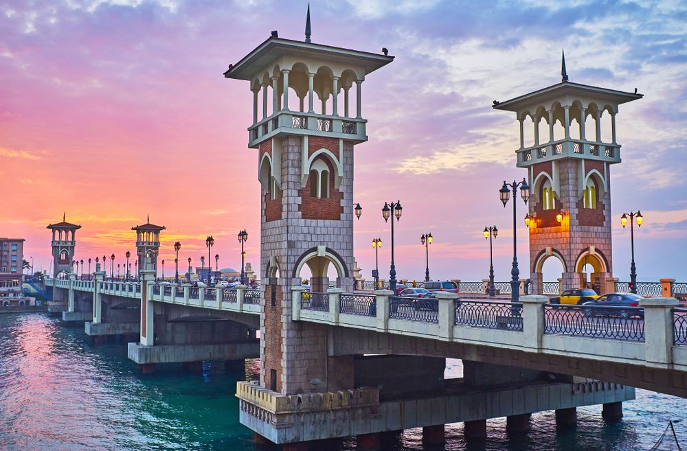
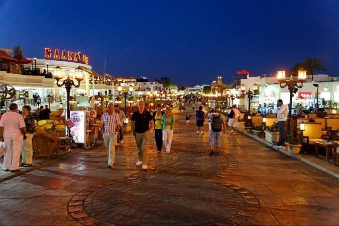
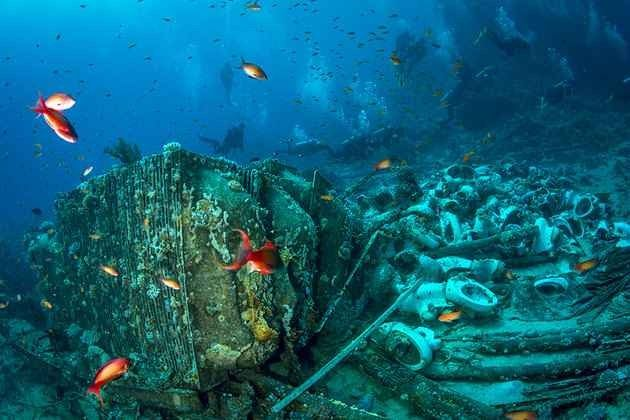

The city of Alexandria, made famous by its famous lighthouse, one of the seven wonders of the ancient world, was founded in -331 by Alexander the Great. It was built on the ruins of an ancient city: Rakhotis. The historical writings are not clear on this, for some, the city was a fishing village, for others, the term rakhotis, which can be translated as "the building", would have been the first city built by the Greeks . Another insinuating hypothesis that the word would mean "the building site", and would simply be a name given by the Egyptians to the place during its construction by Alexander. In other words, the past of the city is not clear. Historically speaking, the country in which the city was built was inhabited by people, shepherds and bandits. From the beginnings of her birth, she announced herself exceptional. Alexander calls upon Deinocrates of Rhodes, a famous Greek architect, to design the city. These slogans are simple; he wants a checkerboard plan, with broad avenues intersecting in right angles. The city will not stop growing. Under Ptolemy first; son of Lagos, the founder of the Lagides dynasty, he received the city as a share on the death of Alexander, settled there and decided to make it the capital of Egypt in -319. Then in the hands of its many other leaders and will quickly become one of the cultural and intellectual centers of the ancient world. Its famous library being for something ... The building also housing a museum, an academy and a university, it was a long time with the lighthouse, the Holy Grail of the city. Renowned around the world, it attracted a crowd of intellectuals and scientists in its walls. But a fire in -47 ravaged part of it.
| the famous places | information about the place | the photo of the place | Naama bay | Naama Bay is the active tourist center of Sharm El Sheikh, where it has more than 100 hotels of different levels, starting from three stars to 5 stars. For tourists without customs or taxes but with conditions. |  |
|---|---|---|
| Jolanda Reef Dive Site | Yolanda Barrier Reef is one of the most famous diving sites; In the northern side of the Red Sea, which is located in the Ras Mohammed National Park. Tourists come from all over the world to dive in this charming place. |  |
The great city of Sinai is one of the most powerful and strong walls that protect our country and the rest of the neighboring cities. There is no person on that land who does not know the great value of the city of Sinai. Since there can be no treachery or any disaster that will not cross from Sinai, and therefore it is one of the most important cities that provide varying patrols so as not to leave that city without security and safety. The land of Sinai is the source of strength for the people of Egypt, as there is no home in which there was no father or grandfather who participated in the Sinai war, which infuses positive and spiritual energies with a feeling of pride for the many moments that passed on to those people, thus endowing other generations with a feeling of strength. And that if they bring that war back in their lives and participate in it again, that is one of the greatest feelings that makes those around them feel really strong. That is why the land of Sinai is my land.